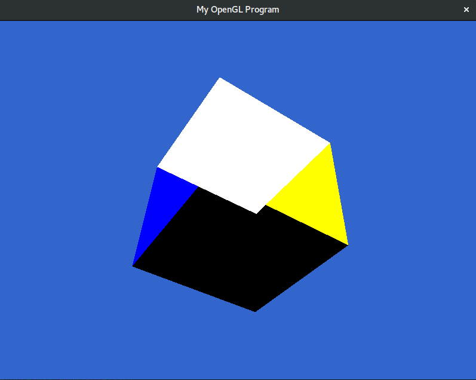

OpenGL Tutorials
Description
This was an assignment was to get five pieces of code running that were introductions into opengl. The first was first get a window up and running. The second was a colored triangle on the scene. The third was a cube without zbuffering, and the fourth was with zbuffering. The fifth was changing with a spinning teapot to have different shading.
Features
- All programs running
- Triangle Color changes (press 'c')
- Teapot moves around and rotates (up,down,left,right and w,a,s,d)
- Teapot is shaded using blinn-phong shading (ModelLoadBlinn.cpp)
- Teapot is shaded using Gouraud shading
Code
Download zip file of code
Tools Used
- Modern OpenGL 3 for drawing and shading
- SDL2 for the windowing and user input
Images:
